Editor
Table of Contents
Overview
The editor is a web based tool to edit IntAct database.
Presently, it supports following IntAct objects: CvTopic, CvCellCycle,
CvDatabase, CvTissue, CvModificationType, CvCellType, Protein,
CvComponentRole, CvFeatureType, CvCompartment, CvProductRole,
CvFeatureIdentification, CvInteraction, BioSource, NucleicAcid,
CvAliasType, SmallMolecule, CvProteinForm, CvInteractionType,
Experiment, Complex, CvReferenceQualifier, CvXrefQualifier,
CvEvidenceType, CvIdentification, Interaction, CvDevelopmentalStage
Note: Any IntAct type name
beginning with Cv is referred to as Cv type from here onwards.
Access
The URL to access the editor is dependent upon the server where the
editor is installed. The general format to access the editor takes the
form of:
http://server/intact/editor, where the server part may contain the port
depending upon the configuration of the web server.
To use the editor, you must have a valid account to access the Intact
database. The user is presented with a login screen as shown below:
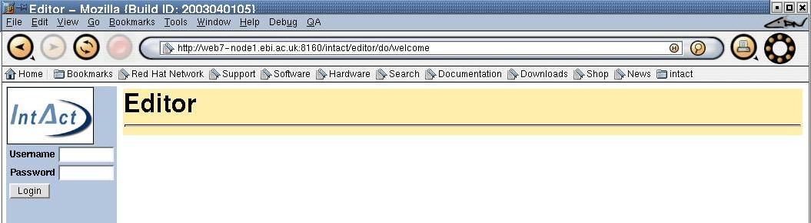
Failure to login with a valid account results in the following error
display:
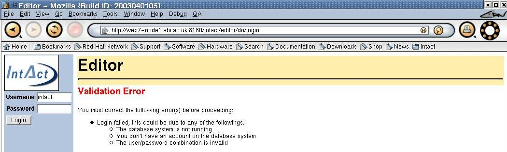
IntAct Types
This list defines the types available for edit. Before proceeding with
any action (search or create), you must select an appropriate type
first.
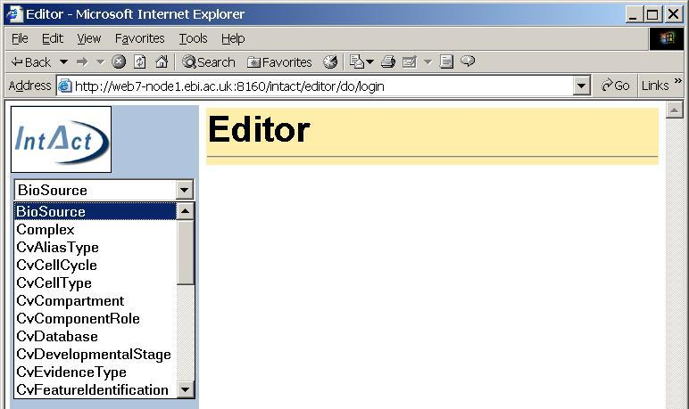
 The
IntAct type list defaults to the first item (e.g., BioSource) if a type
wasn't selected.
The
IntAct type list defaults to the first item (e.g., BioSource) if a type
wasn't selected.
Search
The user must select the type to edit from the drop down list (defaults
to the first item in the list if none specified).
The input field under the drop down list accepts the search criteria.
The search is performed first on accession number (ac), and then on
short label, primary id and full name respectively. So, it is faster to
search by an accession number than by a short label.
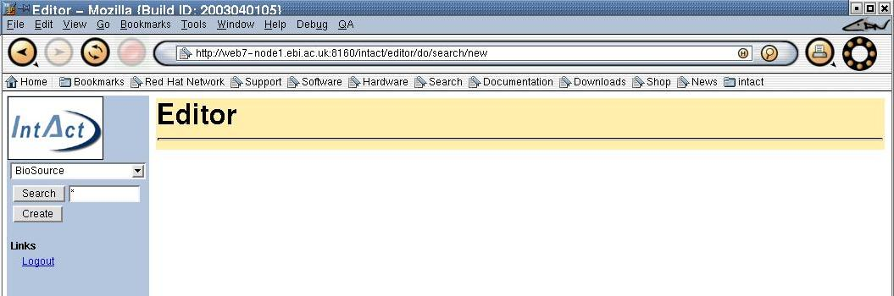
You can accept the default search value (*) by simply clicking on the
search button. This may take some time depending on the database size as
it retrieves all records for given IntAct type. However, you can also
use more restrictive filtering such as EBI-3* to restrieve a subset of
records. The following screen provides an example to this.
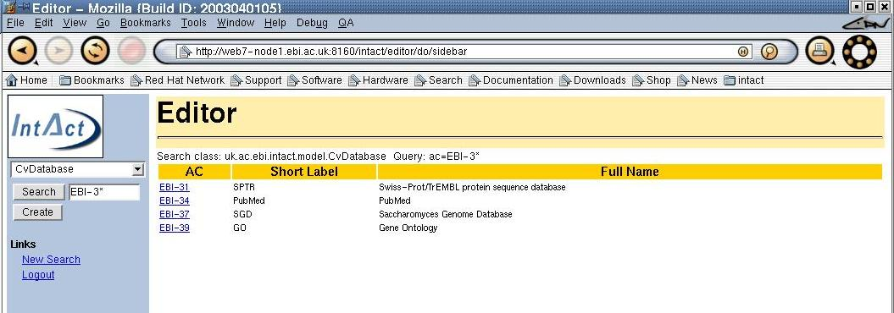
An appropriate message is displayed if a search fails to find any
matching records. Click on the AC link to edit individual entry.
Alternatively, you can enter the short label directly in the search box
and it will take you to the edit screen if a matching record wasn't
found for given short label and type as shown below.
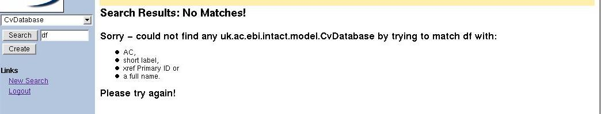
The search is carried
out against the value in the drop down list. So, ensure that you
correctly select the type first before the search.
Cv Editors
The create button creates a record for the selected IntAct type. As
with the search, it is important to select the appropriate type before
clicking on the create button. The following screen shows the result of
creating a new CvDatabase record.
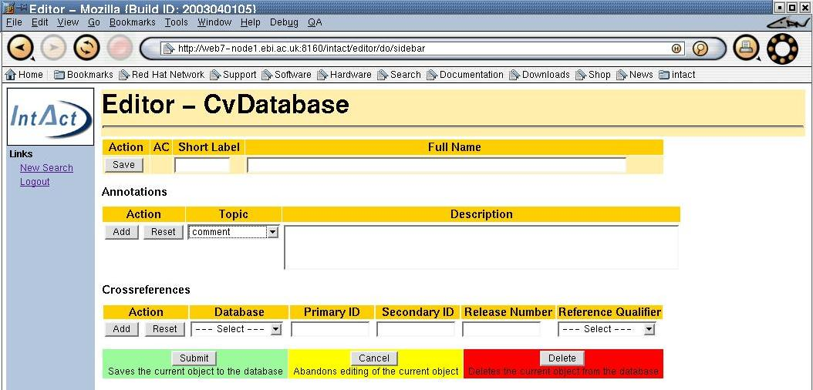
Short Labels
The current edit type is appended to the main heading (CvDatabase) as
shown above. All the drop down list items (topic, database and
reference qualifier) are shown as short labels. Except for the
short label, all other fields are optional. The user must select 'Save'
button to validate the short label. All short labels should be one to
twenty characters from the character set blank, 0..9, a-z, : (colon) and
-(dash). A dialog box similar to the following will appear for a
failure to adhere to this syntax.
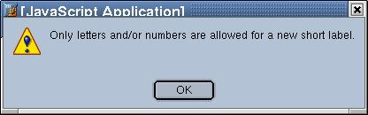
Submitting the form without entering a syntaxically invalid short label
results in a server side validation. The error response from the server
is shown under the short label as shown below.
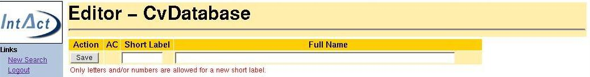
Although both validations are similar in nature, they serve two
different purposes. The first validation is performed on the client side
(browser) and hence faster of the two. However, the browser must be
enabled to accept Javascript for it to work (no dialog window if
Javascript is not enabled). This is the preferred validation as it saves
extra step in communication with the server. Alternatively, the other
validation is not dependent on Javascript and hence guranteed to work on
any browser. However, it is slow since it involves a round trip to the
server.
For a short label to be valid it must be syntaxically correct and
unique (i.e, no simlar label for the current edit type exists in the
database). All the existing short lables for the current edit types are
shown along with an error message for a non unique short label entry.
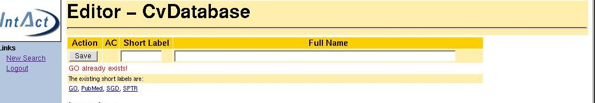
Annotations
Annotations are added by clicking on the Add button in the Annotation
section. Associated with each Annotation is a topic which is one of
CvTopics available in the database. An error message is displayed when
trying to add an annotation without selecting an appropriate type from
the drop down lists.
The editing an annotation is similar to adding a new Annotation except
for topic and description are already set to their existing values. The
screen snapshot given below shows two annotations with one in the
editing mode.
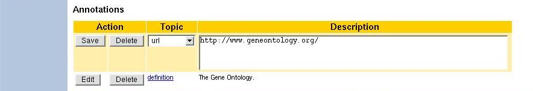
Crossreferences
Similar to Annotations, Crossreferences are added by clicking on the
Add button in the Crossreference section. The database drop list
consists of short labels for CvDatbase itsm from the IntAct database and
the reference qualifier consists of short labels for CvXrefQualifier.
As with annotations, the values from drop down lists must be selected
prior to adding a crossreference. Editing an existing Crossreference
similar to adding a new one except for existing values are shown instead
of empty values.
Any changes to the form are not saved until the form is submitted. So
for a new IntAct type, a record is created on the database until the
Submit button is clicked and the server reports no errors.
Editing an existing record is similar to the above except the form is
populated with existing data. As shown below, the short label and full
name already have their existing values.
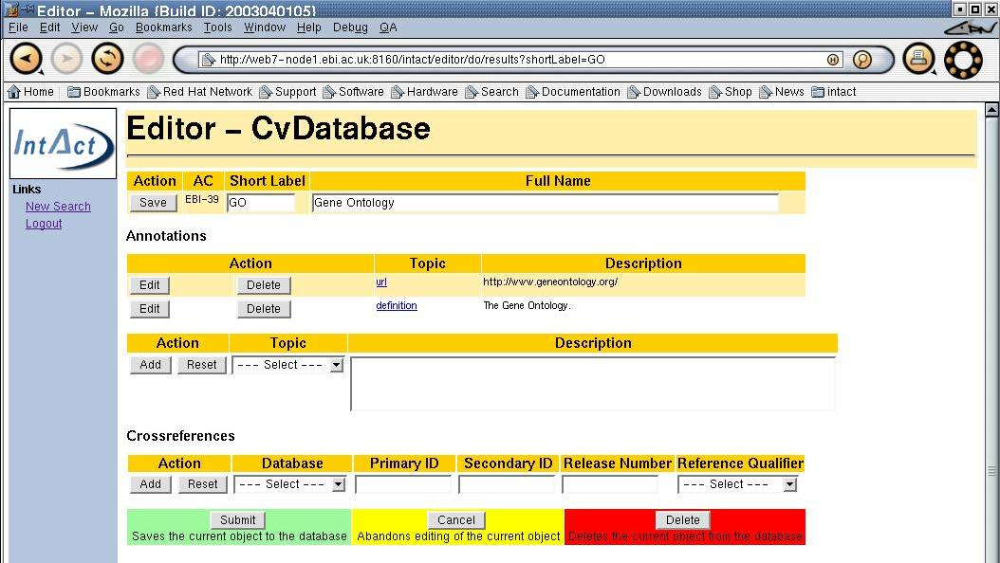
Other Editors
Since Cv editor layout is common to all other editors, only the
differences are shown for other editors.
BioSource
The biosource editor uses the Newt server to auto-complete the short
label and the full name.
Experiment
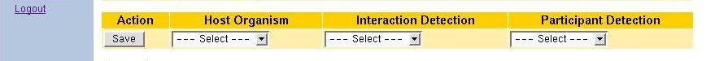
All the above three fields must contain values for a valid Experiment.
Need to add more here...
Interaction
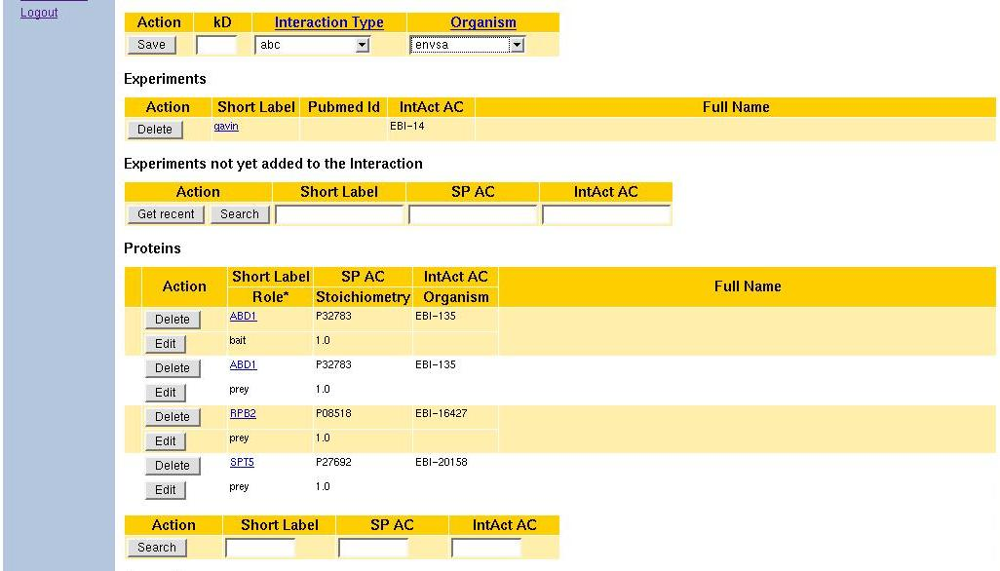
Experiments
This section describes Experiments already part of the current
Interaction. The area below holds experiments not yet added to the
Interaction as shown below.
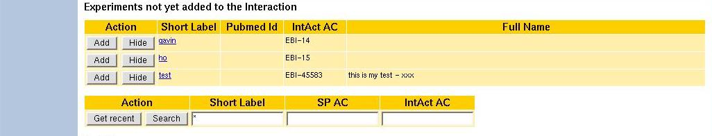
Select Add button to add an experiment or Hide to remove from the
collection. Duplcate experiments not allowed.
Proteins
This section lists all the Proteins participated in the cirrent
Interaction. For a new Interaction, this section is empty. To add a
Protein, you must search for existing Proteins first by provide
appropriate values for search fields. Only the most specific value
is taken into consideration if multiple values are provided for search.
Since IntAct AC is the most specific, other search values are ignored
if a value was specified for IntAct AC.
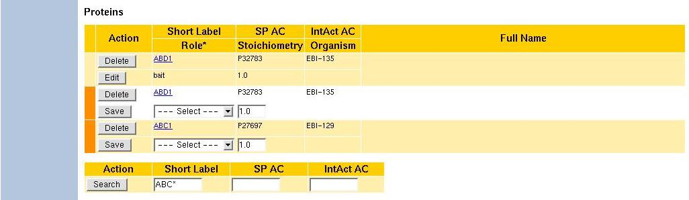
The orange colour bar on the left Protein identfies as new Proteins not
yet added to the Interaction. The first Protein is already part of the
Interaction and hence for absence of color bar next to it. These
'color coded' Proteins do not form part of the current Interaction until
the user save them by selecting 'Save' button.
Any errors in adding Proteins are shown red colour as shown below.
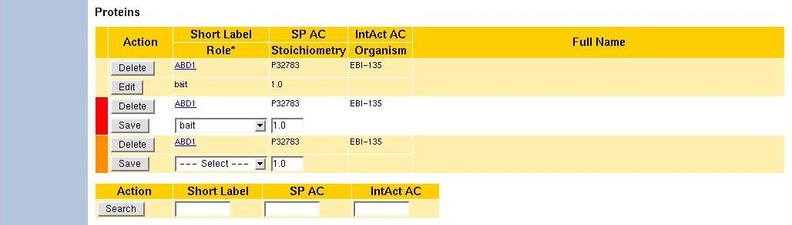
It is an error to add two identical Proteins with similar role. As
illustrated in the above example, Protein ABD1 already exists as a bait
of the Interaction and adding ABD1 again as a bait caused the
above error. The only alternative in this instance is to assign a
different role (other than bait) for the new Protein.
FAQ
What browsers Editor supports?
It has been tested using Mozilla (1.4a), Explorer (6.0) and
Konqueror (2.1.1 or above). With the Konqueror it has been noted that
pop up windows do not get the focus (need to bring them manually). Also,
the footer is almost at the top when a page does not contain much
information.
Do I need a JRE installed to run the
Editor?
No, you don't need Java Runtime to run the Editor as it is designed to
run on thin clients (see the next question about JavaScript).
Do I need JavaScript to run the Editor?
No but it helps a lot. For example, some validations such as short
label syntax are faster as they are peformed via JavaScript. Also, the
links to pop up windows wouldn't work when JavaScript is not enabled.
However, the overall functionality of the Editor shouldn't be affected
if JavaScript is not enabled.
Do I need to logout when I am finished?
There is no need to logout because your session will timeout if it has
been inactive for 30 or more minutes. However, by explicitly logging out
you are releasing the resources (good thing to do). So, we recommend
explicit logouts.
Can I connect to my last session when
my session expires?
No. Once your session expires you need to login again and this in turn
will start a new session.
I get an error stack trace for some
IntAct types.
Not to worry because these types are not implemented yet. This
exception shouldn't appear at all once we have implemented all the
IntAct types.
Sometimes I get an error when Enter
key is pressed for a search string in the sidebar.
This behaviour was observed with Explorer and Konqueror but not
with Mozilla. The simple solution is to click on Search button instead.
After entering 'abc' as a short label,
I pressed Save and it accepted 'abc' as the short label. Now I entered
'ab%' and the form is submitted without any complaints. I thought
'ab%' is an invalid short label and the expected error message didn't
appear. What is happening?
As far as the system is concerned it remembers the value associated
with the last 'Save' action. Since you pressed 'Save' after 'abc' but
not after 'ab%', it has already assigned 'abc' as the short label. In a
nut shell, it is not even aware of 'ab%' because it hasn't seen it.
It hangs for a tax id in BioSource
editor.
Either Newt server is not accessible or down. There is no way to get
around this problem; you need to access the Newt server to do the
auto-completion.
Not allowed to save an experiment as
it fails with validation errors for drop down lists.
Those drop down lists must contain at least a single item for an
Experiment to save. Ensure that host organism, interaction detection and
participant detection have at least one value in each one of them. If
not then use the editor to create values for these (BioSource,
CvInteraction and CvIndetification) and return to the Experiment editor.
In summary, if you are caught in this situation you need to leave the
Experiment editor, create proper entries and then return to it later.
The parameter to search for Proteins
given as short label is ignored when a value is provided for IntactAc in
the Interaction editor.
By default, IntAct AC is the most specific and it is followed by SP AC
and finally the short label. Given two values for short label and
IntAct AC, the latter is always given the priority.
Is there a way to save or delete all
Proteins in one single click?
Not at the moment. We may add this behaviour later.